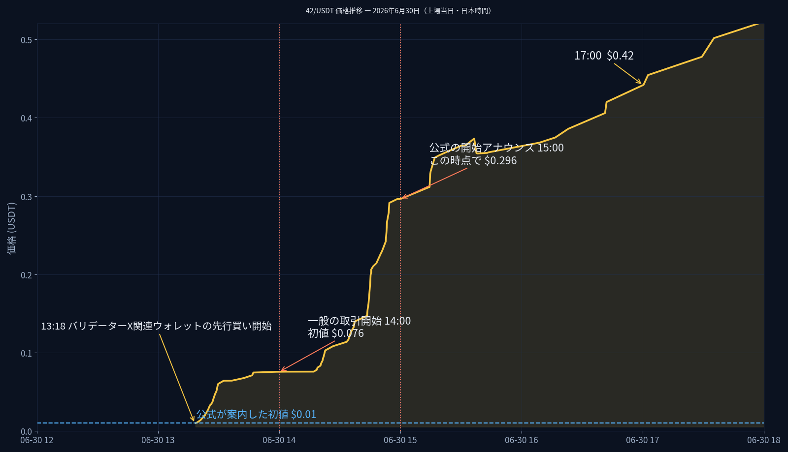

42 Chain（暗号資産 [42] や DONT などが取引されるブロックチェーン）で行った調査の全体まとめです。専門用語はできるだけ避け、必要な言葉には説明を添えました。数字はすべて、チェーン上に記録された実際の取引データから確認したものです（2026年10月31日時点の記録が中心）。詳しい個別調査へのリンクは末尾にあります。
Luke、farmer、Woman-In-Red-42、Metal Raptor、DRIVESTATS、vethawk、X、ayc、Zap、XenIt、dudenode、Popo、panda42、FoxxOne、Sirius Cybernetics、Xenia、DON'T PANIC - DEX、CCUK、light888、kimnmike、the_rider、ほか2名の、合計23人です。この調査で中心になるのは X と、その周りのウォレットです。
この4つの関連ウォレットは、お金の流れから強く結びついていることが分かっています（C8 だけは推定）。X グループ以外も含めると、バリデーター全員の関連ウォレットは合計51件見つかっています。
| 名前 | 平たく言うと |
|---|---|
| 交換所の仕組み（プールや交換係のコントラクト群） | トークン同士を交換したり、お金を預けておく場所。人ではなく自動プログラム（コントラクト） |
| 共有の保管コントラクト 0x71b1…30e0 | 8人のバリデーターが共用する「預け金証明の集約場所」。特定の誰かの持ち物ではない |
| Starlight 0xebc3…db07 | 特典（ガイドNFT）を登録した人へ、毎週 [42] のご褒美を配る台帳の仕組み |
| 手数料の集金箱・担保の窓口（システム系コントラクト） | チェーンの利用料を集めたり、バリデーターの担保を管理したりする自動の窓口 |
| チェーン同士の橋（ブリッジ） | 他のチェーンとお金をやり取りするための関門 |
2026年6月30日、このチェーンの代表的なトークン [42] と DONT が「上場」しました。一般の人が買えるようになる、その日の出来事を図にするとこうなります。

図：上場当日の価格の動き（日本時間）。青い破線が公式に案内された初値 $0.01 です。
| 比べるもの | 価格 | 意味 |
|---|---|---|
| 公式が案内した初値 | $0.01 | 一般もこの価格で買えると思っていた数字 |
| 先行組の平均取得価格 | 約 $0.024 | X 関連2ウォレットが上場前に買った平均 |
| 一般の人が最初に買えた価格 | $0.076 | 14時の開始時点で既にこの価格 |
| 開始のお知らせが出た時点 | $0.296 | 15時、初値の約30倍 |
| 置き場所 | 中身 | 平たく言うと |
|---|---|---|
| W5（金庫） | 42/DONT プールの預け金証明 100,000（プール全体の 8.13%） | この交換場所の約12分の1は実質グループの預け金 |
| W5（金庫） | USDT/42 プールの預け金証明 1,000（プール全体の 7.88%） | 価格の基準になる交換場所の約13分の1 |
| W5（金庫） | DONT 現物 5,000,000／QOM 現物 約5,729億（572,871,515,520）／CAW 約410億ほか | 上場前に仕込んだものと、その後の運用で貯まった在庫 |
| AF（運用） | QOM 約58.6億・CAW 約123.6億などの在庫、[42] 758.73 | 運用の手元に残った分 |
| X 本人 | 財布の [42] 110.46、担保 15,000 [42]（出所は不明な分を含む） | 本人名義はほぼ空 |
| A8・C8 | ほぼゼロ | 買う係と通過点なので、在庫を持たない |
X は2026年9月6日から10月31日まで、56日間・1日も欠かさず、ご褒美のトークン FISH を受け取っていました。合計 134.7003 FISH（1日平均 2.405）。使い道は、約8割（108.8447）がプールへの預け金に変わり、約13%は運営側の仕組みで消却され、約6%（7.8584）だけが売られました。今は FISH の残高もゼロで、受け取りと使い道は端数まで一致しています。なお、担保に対する [42] のご褒美を受け取った形跡は見つかっていません。
バリデーター同士が直接お金を送り合った記録はとても少なく、別の仕組み（Cosmos 送金）でも 19組の向きのある送金だけ で、お互いに送り合った組は ゼロ でした。それでも「揃った動き」はいくつか見つかっています。どれも「同じ人物が裏にいる証拠」とまでは言えないので、言い切りは避けて紹介します。
| 見つかった揃い方 | 内容 | どう読むか |
|---|---|---|
| 種まき | バリデーター Xenia（0x63cd…f341）が、他のバリデーター 18人へ、1人につき ちょうど 2 [42] ずつ を1回だけ送っていた（合計では配布系の大きな動きもあり、チェーン最大の保有者 0x7a6f…0a25［全 [42] の約84%＝1,904,815 を保有］との間では 140,764 [42] の大きなやり取りも） | 一斉に配った「合図」か、同じ運営者が配ったのかは、送金記録だけでは区別できない |
| 同量の分け前 | 42/DONT プールの預け金証明 70,583.9 という全く同じ量を、バリデーター本人や関連ウォレット 少なくとも7件 が保有（70,573.8 という量も3件）。上場の約1か月前に、17ウォレットへ同量ずつ配られた形 | 同じ量を配られた＝最初から分け前として配布された形跡。受け取り自体はコミュニティ配布の範囲とみている |
| 同じ金額の通過 | DONT の運営系ウォレット 0x79b7…64eb が、14のアドレスへ ちょうど 5,000,000 DONT ずつ を配布。そのうち4人のバリデーター（Metal Raptor、vethawk、panda42、kimnmike）は受け取って、ほぼそのまま次へ送り出していた | 配る側の設計が同じ量だったことの表れ。通過させた側が同一人物とは言えない |
| 同じ回数の売却 | 9人のバリデーター（Luke、vethawk、DRIVESTATS、Zap、XenIt、dudenode、Popo、kimnmike、the_rider）が、ご褒美の FISH を [42] に換える売却を 54〜56回ずつ というほぼ同数で実行。入る量も似通っている | 同じ自動売却の道具を使っているか、同じ運営者の可能性はあるが、公開されている道具を皆が使っただけでも同じ形になる |
なお、全バリデーターの送り先・受け取り先のリストは全件照合済みで、2件の集計ミス（farmer の交換係あて 8件・2,429.43 [42]／X の交換係あて 73件・165.60 [42] が正しい値）も修正済みです。
新しいトークンの売買が始まった直後に真っ先に買い、安いうちに手に入れる行為を、ここでは スナイプ と呼びます（この調査では「売買開始から1時間以内の買い」をスナイプとして数えました）。
[42] が関係する売買場所59か所で数えると、バリデーター関係者によるスナイプは 103件。内訳は、バリデーター本人 0件、直接の関連ウォレット 17件、そして「推定」でしかつながらない相手が 86件（83%）でした。つまり、名前の分かるバリデーター自身は、[42] の売買場所ではスナイプをしていません。
全部の売買場所まで広げても構図は同じで、バリデーター本人のスナイプは全体で たった1件 だけでした：
| 誰が | 何をしたか |
|---|---|
| farmer 本人（0x46c7…de41） | 唯一の本人スナイプ。FISH/MARVIN の売買開始から約33分後に MARVIN を 3,758,841 購入 |
| 外部の高速な買い手 0xa6b3…6f9e | 27か所で47回のスナイプ。QOM の売買開始と全く同時（0秒）に 0.1776 [42] で QOM を 151,955,491.7 も買った記録も。バリデーターとは「推定」でしかつながらない |
| 外部の高速な買い手 0xfceb…5553 | このチェーンで最も多く売買しているウォレット（2,836回）。売買開始と同時に最初の買い手になったことが3回。こちらも「推定」だけのつながり |
まとめると、スナイプの主役はバリデーターではなく、正体の分からない外部の高速な買い手（自動プログラムとみられる） でした。バリデーター側に残るのは、farmer の1件と、直接関連の数件だけです。
おまけの観察：いくつかのトークンでは、作った本人（発行者）がほぼ全部を握っています。MARVIN の発行者 0x51ff…63dc は発行分の大半を、FOXXEY と BFOXX の発行者 0xaeca…ed30 は FOXXEY の95%・BFOXX の100%（各 42,000,000）を受け取っていました。
財布の住所（アドレス）は、他のチェーンでも同じものが使えます。X グループの5つのウォレットが、イーサリアム（ETH）と BSC という2つの大きなチェーンでどうなっているか調べました。
| 取引所 | 誰を通じて | 接点の中身 |
|---|---|---|
| Liquid（国内・旧 Quoine、現在は別会社に引き継がれ取引所としては終了） | AF（直接関連）の資金源の、さらに源 | AF にお金を出した払い出しウォレットが、2019年に Liquid のウォレットから最初の 800 ETH を受けていた。グループの財布が直接やり取りしたわけではない |
| MEXC（海外） | C8（推定関連）の資金一味 | C8 の仲間のウォレット群のお金の出どころが、繰り返し MEXC からの出金だった。ドル資金の入金元にも MEXC の表示があるウォレット |
| その他の国内取引所 | — | グループのウォレット自身の相手として、国内取引所との直接のやり取りは見つかっていない |
| BSC 側 | AF | AF は BSC でも16回送金しているが、その中身（相手・金額）は無料の手段では取得できず未確認。取引所との接点があるかどうかは BSC 側だけ切り分けられていない |
| 分からないこと | なぜ分からないか |
|---|---|
| バリデーターたちが預けている大きな担保（例：X の 15,000 [42] のうち約 11,165 [42]）のお金の出どころ | 記録に残らない経路（チェーン開始時の初期配分など）で入ったとみられ、追跡の手がかりがない |
| 軍資金 1,490 USDT を「誰が橋の渡し先として指定・手配したか」 | 橋の指定先は取引の表側に残らないため、チェーンの記録からは読み取れない |
| AF の BSC 側16回の送金の中身 | BSC の履歴を無料で取れる手段が見つからず、存在と残高だけ確認済み |
| 払い出しウォレット（0xdb3d…58f7）の運営者 | 表示名（ラベル）を持つ情報源がどこにもなく、推測の域を出ない（第7章参照） |
| トークン同士の受け渡し役（0x11bf…7e26）の性質 | AF と C8 の両方に新トークン AICC を 17,500 ずつ配っていたが、初期の配布係なのか普通の取引なのかは判定できていない |
| 「取引開始は $0.01 からだったのか」についての開発側の正式な答え | ユーザーから開発側へ質問を送る準備が進められている段階で、回答はまだ得られていない。この調査としては、プールの最初の価格が $0.01 だったことと、一般が実際に買えたのは $0.076 からだったことの両方が、記録で確認できている |
| 言葉 | やさしい説明 |
|---|---|
| バリデーター | チェーンの取引記録が正しいか見張り、投票で確定させる係。仕事の担保として自分のトークンを預ける |
| ウォレット（財布） | 暗号資産を入れる財布。0x で始まる住所（アドレス）が「口座番号」のようなもの |
| プール（流動性プール） | 2種類のトークンを入れた「交換場所」。入っている量の比率で価格が自動的に決まる |
| 流動性を入れる／LP証明 | 交換場所に2種類のトークンを預けること。預けた証拠として受け取る証明書（LPトークン）を LP 証明と呼ぶ |
| スワップ | 交換場所でトークン同士を取り替えること（売買） |
| スナイプ | 売買が始まった直後に真っ先に買うこと。安い価格を押さえる動き |
| ブリッジ（橋） | 資産を別のチェーンへ移す仕組み。橋を渡ると、移った先のチェーンで同額が新たに作られることがある |
| ステーキング（担保） | バリデーターの仕事の担保としてトークンを預けること。預けた分に応じて信用と報酬が決まる |
| 推定のつながり | 直接の送金はないが、金額とタイミングの一致などから「つながっている可能性が高い」と判断した関係。証明ではないので、断定には使わない |
| VWAP（平均単価） | 買った量で重み付けした平均の価格。「だいたい1ついくらで買ったか」の目安 |
| ホットウォレット | 取引所などが日々の入出金に使う、常時動いている財布 |
この入門ページの元になった調査レポートです。どれもこのページと同じフォルダにあります。
| レポート | 内容 |
|---|---|
| validator-sends.html | 全バリデーターの送り先・受け取り先の完全リスト（全件照合済み） |
| validator-dossiers.html | バリデーター1人ずつの詳しい素行調査 |
| related-address-dossiers.html | 関連・推定ウォレット51件の個別調査 |
| validator-sniping-42pairs.html | [42] が関係する売買場所でのスナイプの実態 |
| four-token-sniping.html | MARVIN・FOXXEY・BFOXX など4トークンのスナイプと発行者の調査 |
| foxxey-dont-42pairs.html | FOXXEY・DONT と [42] の売買場所の分析 |
| dont-listing-window.html | DONT 上場直後3時間の取引の全記録 |
| usdt-listing-window.html | USDT プール上場当日の全記録（先行買いの内訳つき） |
| x-orbit-fund-trace.html | X グループの軍資金 1,490 USDT の出どころの追跡 |
| x-liquidity-rewards.html | X の56日間連続のご褒美受け取りの記録 |
| x-group-token-flows.html | X グループのトークンごとの動き（DONT の塊の旅など） |
| x-group-lp-deepdive.html | X グループの預け金（LP）の役割分担の深掘り |
| x-positions-summary.html | X グループの今の持ち物の総まとめ |
| listing-time-assessment.html | 「上場は6月30日14時だったか」の検証 |
| insider-trading-analysis.html | 先行買いのどこが問題なのかを整理した分析 |
| x-group-bsc-eth.html | X グループの他のチェーン（BSC・ETH）での活動 |
| eth-funding-origins.html | イーサリアム側のお金の出どころを深く追った記録 |
このページの数字は、各レポートの最新の訂正済みの値に合わせています。確認の基準時点は主に2026年10月31日です。アドレスをタップ（クリック）すると、外部の記録表示サイト（42 Chain は infinitedrive のスキャン、ETH は Etherscan、BSC は BscScan）で実際の記録を確認できます。